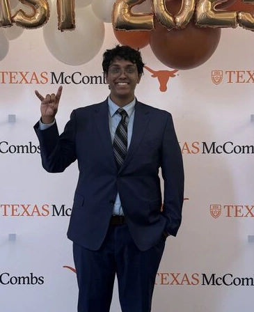
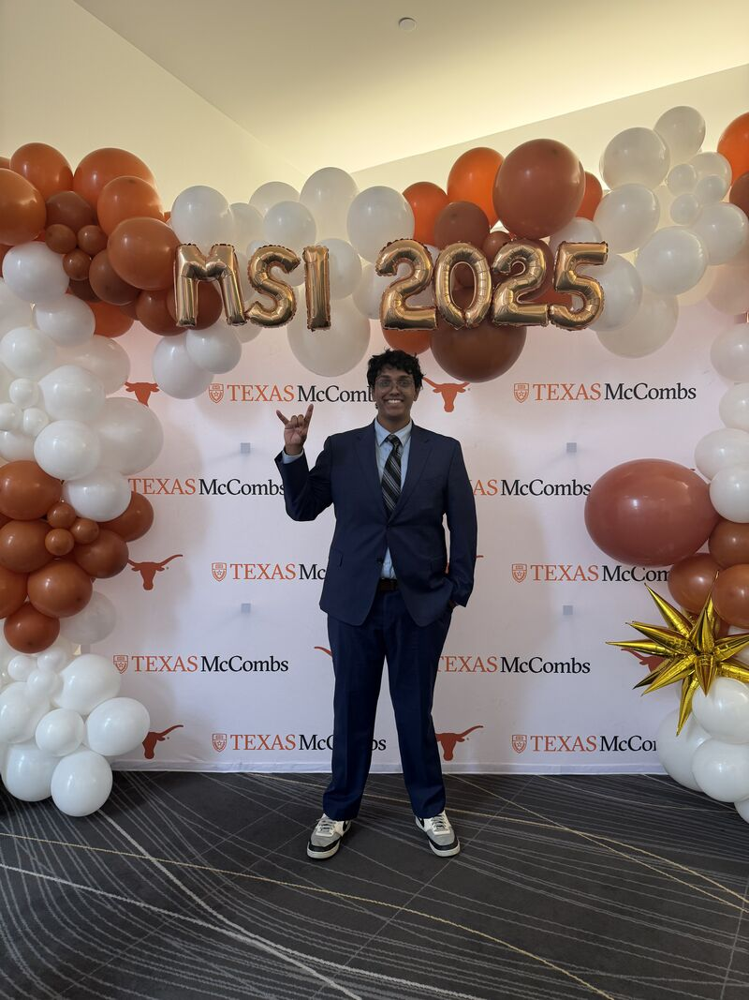
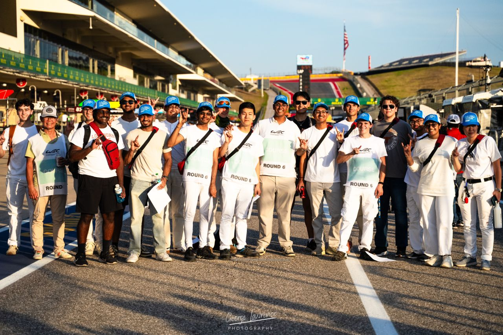

Mechanical Engineering
Yash Tate
Incoming INDYCAR Engineering Intern at Rahal Letterman Lanigan Racing
Mechanical Engineering Junior · The University of Texas at Austin
I work on powertrain design and vehicle integration with Longhorn Baja Racing. I’m looking to join a race team as a mechanical engineer after graduation.

- Powertrain Design
- CAD Assembly
- Drivetrain Packaging
- Design Documentation
- SolidWorks
- CATIA V5/V6
- ANSYS FEA/CFD
- Jig & Fixture Design
- DFMEA/PFMEA
- MATLAB/Simulink
About

Yash Tate
I co-founded Longhorn Baja Racing at UT Austin. As powertrain lead, I’ve worked on everything from choosing gear ratios in SolidWorks to finding out why a drivetrain failed during an endurance run. Right now, I’m designing the gearbox mount for our next layout.
Away from the shop, I volunteer as a race marshal at Circuit of The Americas. In summer 2027, I’ll join Rahal Letterman Lanigan Racing to work on suspension dampers, test procedures, and fixtures.
Race weekends

